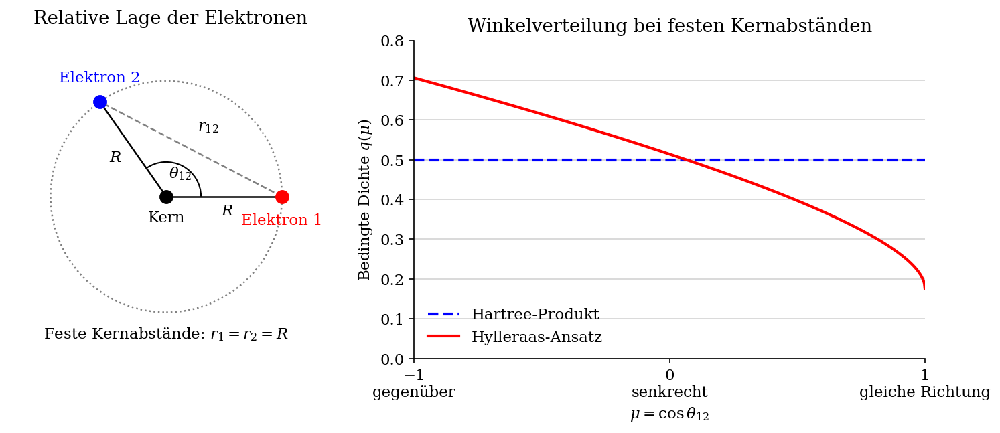
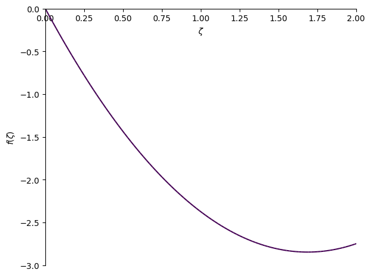

Elektronenkorrelation#
Hylleraas‐Methode für Helium#
Das Heliumatom als das einfachste Mehr‐Elektronen‐System eignet sich gut, um den Einfluss der Elektronenkorrelation auf die Gesamtenergie zu untersuchen. Im Hartree‐Produktansatz, den wir vorher als einfachste Beschreibung der Zweielektronen-Wellenfunktion eingeführt haben,
sind die Elektronenkoordinaten voneinander entkoppelt. Man sagt auch, dass die Elektronen in diesem Ansatz nicht korreliert sind
Gemeinsame Wahrscheinlichkeitsdichte und statistische Unabhängigkeit#
Wir betrachten die räumliche Wahrscheinlichkeitsdichte des Helium-Grundzustands. Für eine normierte räumliche Wellenfunktion ist
die gemeinsame Wahrscheinlichkeitsdichte der beiden Elektronenorte. Die Wahrscheinlichkeit, Elektron 1 im kleinen Volumenelement \(d^3r_1\) um \(\mathbf{r}_1\) und zugleich Elektron 2 im Volumenelement \(d^3r_2\) um \(\mathbf{r}_2\) zu finden, ist
Interessiert uns nur der Ort eines Elektrons, integrieren wir über alle möglichen Orte des anderen. So erhalten wir die Margarinaldichten
Beide Marginaldichten sind jeweils auf 1 normiert. Ist auch das Orbital \(\psi\) auf 1 normiert, folgt für das Hartree-Produkt unmittelbar
Die gemeinsame Dichte faktorisiert also in das Produkt der beiden Marginaldichten. Genau dies ist die Bedingung für die statistische Unabhängigkeit der Elektronenorte.
Was ändert sich bei korrelierten Elektronen?#
Besonders anschaulich wird die Bedeutung durch die bedingte Wahrscheinlichkeitsdichte. Wenn wir die Ortslage des Elektrons 1 bei \(\mathbf{r}_1\) fixieren, können wir die Wahrscheinlichkeitsverteilung des Elektrons 2 unter dieser Bedingung betrachten. Für \(p_1(\mathbf{r}_1)>0\) gilt
Im Hartree-Produkt kürzt sich der erste Faktor heraus:
Die Kenntnis des Ortes von Elektron 1 ändert somit nichts an der Verteilung von Elektron 2. Bei einem \(1s\)-Orbital bleibt diese Verteilung kugelsymmetrisch um den Kern, unabhängig davon, wo sich das Elektron 1 befindet.
Elektronenkorrelation bedeutet dagegen, dass die Kenntnis eines Elektronenortes die Wahrscheinlichkeitsverteilung des anderen verändert. Dann lässt sich die gemeinsame Dichte nicht als Produkt ihrer Marginaldichten schreiben, und \(p(\mathbf{r}_2\mid\mathbf{r}_1)\) hängt von \(\mathbf{r}_1\) ab. Aufgrund der Coulomb-Abstoßung sind Konfigurationen mit kleinem Elektronenabstand weniger günstig.
Bei vorgegebenen Kernabständen \(r_1\) und \(r_2\) werden Anordnungen mit größerem gegenseitigem Abstand \(r_{12}\) bevorzugt! Da auch im Hartree-Produkt die mittlere Abstoßungsenergie \(\langle 1/r_{12}\rangle\) ungleich null ist, statistische Unabhängigkeit bedeutet daher nicht, dass die Wechselwirkung fehlt. Es fehlt vielmehr die Anpassung der bedingten Verteilung an den jeweiligen Ort des anderen Elektrons. Diese räumliche Coulomb-Korrelation kann die Energie gegenüber dem Produktansatz weiter senken.
Variationsansatz von Hylleraas#
Hylleraas zeigte 1929, dass sich eine erhebliche Verbesserung erreichen lässt, wenn man den Abstand
als zusätzliche Variable in den variationellen Ansatz einführt. Zu diesem Zweck definieren wir nun die sogenannten Hylleraas‐Koordinaten
die eine natürliche Grundlage für eine explizit korrelierte Beschreibung bilden.
Die Hylleraas‐Wellenfunktion wird als Produkt eines exponentiellen Faktor mit einer polynomiellen Korrektur gewählt. Wenn man im einfachsten Fall nur den linearen Term in \(u = r_{12}\) behält, erhält man den folgenden variationellen Ansatz:
Den variationellen Parameter \(\zeta\) kann man als eine effektive (abgeschirmte) Kernladung aufpassen und \(\gamma\) ist ein Korrelationsparameter. Für \(\gamma=0\) reduziert sich der Ausdruck auf das unkorrelierte Hartree‐Produkt, während \(\gamma\neq 0\) eine explizite Abhängigkeit von \(r_{12}=u\) einführt.
Skizze: Wie hängt die relative Lage der Elektronen zusammen?#
Für eine anschauliche Momentaufnahme wählen wir gleiche, feste Kernabstände \(r_1=r_2=R\) und betrachten nur den Winkel \(\theta_{12}\) zwischen den beiden Ortsvektoren. Der Kreis links markiert diesen Abstand, keine Elektronenbahn. Mit \(\mu=\cos\theta_{12}\) gilt
Rechts ist die bedingte Dichte \(q(\mu)\) bezüglich \(d\mu\) dargestellt, normiert durch \(\int_{-1}^{1}q(\mu)\,d\mu=1\). Das Hartree-Produkt liefert \(q_0(\mu)=1/2\): Alle Raumrichtungen sind gleichberechtigt. Beim einfachen Hylleraas-Ansatz ist dagegen
Wir wählen zur Illustration \(R=a_0\) und \(\gamma=0.5\,a_0^{-1}\); diese Parameter sind hier nicht durch Energieminimierung bestimmt. Der Exponentialfaktor ist bei festen \(r_1,r_2\) konstant und fällt bei der Normierung weg.

Lesart der Skizze: Bei \(\mu=-1\) liegen die Elektronen auf gegenüberliegenden Seiten des Kerns (\(r_{12}=2R\)), bei \(\mu=1\) in derselben Richtung und wegen der gleichen Kernabstände am selben Ort (\(r_{12}=0\)). Die rote Kurve gewichtet größere Abstände stärker als die blaue Hartree-Kurve. Bei einem anderen vorgegebenen Ort von Elektron 1 dreht sich auch die bevorzugte Richtung für Elektron 2 mit: Die beiden Orte sind korreliert. Dargestellt ist nur die Winkelverteilung bei festen Kernabständen, nicht die vollständige räumliche Elektronendichte.
Energieerwartungswerte für den Hylleraas-Ansatz#
Wir berechnen nun zunächst den Erwartungswert der Energie für den Hylleraas-Ansatz und zerlegen den in drei Beiträge nach:
Dabei haben wir die folgenden Größen definiert:
Im Folgenden berechnen wir die Integrale analytisch und überprüfen unsere Ergebnisse durch symbolische Integration mit SymPy.
Mathematische Ergänzung: Transformation des Volumenelements#
Gegeben sei eine glatte Transformation zwischen den kartesischen und allgemeinen krummlinigen Koordinaten:
Bei einer solchen Transformation wird ein kleines Koordinatenwürfelchen mit den Kantenlängen \(dq_1\), \(dq_2\) und \(dq_3\) lokal auf ein Parallelepiped im \(\mathbf{r}\)-Raum abgebildet.
Die entsprechenden Basisvektoren, die das Parallelepiped aufspannen, sind gegeben durch
Das Volumen dieses Parallelepipeds lässt sich somit als Spatprodukt beziehungsweise mithilfe der Jacobi-Determinante ausdrücken:
In orthogonalen krummlinigen Koordinaten mit den Skalenfaktoren
reduziert sich dies auf
Zum Beispiel gilt in sphärischen Polarkoordinaten:
Rezept: Schreibe \(\mathbf{r}(q_1,q_2,q_3)\), bilde die Jacobi-Matrix \(J\) mit den Elementen \(J_{ji}=\partial x_j/\partial q_i\) (oder die Basisvektoren \(\mathbf{e}_i\)) und multipliziere \(dq_1\,dq_2\,dq_3\) mit \(|\det J|\).
Transformation des Volumenelements#
Für die Integration über die Koordinaten zweier Elektronen wird zunächst das volle sechsdimensionale Volumenelement betrachtet, das sich aus den Kugelkoordinaten des ersten Elektrons \((r_1, \theta_1, \phi_1)\) und den Kugelkoordinaten des relativen Ortsvektors \(\mathbf{r}_{12} = \mathbf{r}_2 - \mathbf{r}_1\) mit \((r_{12}, \theta_{12}, \phi_{12})\) zusammensetzt. Das zugehörige Volumenelement (Integratiosmaß) lautet
Da Hylleraas-Funktionen nur von den Abständen \(r_1\), \(r_2\) und \(r_{12}\) abhängen und damit invariant gegenüber einer gemeinsamen Rotation beider Elektronen sind, treten die absoluten Winkel \(\theta_1\), \(\phi_1\) und \(\phi_{12}\) nicht explizit auf. Diese Winkel können daher sofort integriert werden, was die Faktoren
liefert. Übrig bleibt das reduzierte Volumenelement
das nur noch von \(r_1\), \(r_{12}\) und dem Winkel \(\theta_{12}\) zwischen den Vektoren \(\mathbf{r}_1\) und \(\mathbf{r}_{12}\) abhängt. Es ist nun günstig den Winkel \(\theta_{12}\) durch den Abstand \(r_2\) des zweiten Elektrons vom Kern zu ersetzen. Dies erfolgt über den Kosinussatz:
Zur Transformation des Volumenelements wird die Jacobi-Determinante der Transformationsabbildung
benötigt. Da nur die letzte Variable transformiert wird, genügt die partielle Ableitung
woraus sich
ergibt. Eingesetzt in das reduzierte Volumenelement führt dies auf das Volumenelement in den neuen Koordinaten:
Die Integrationsgrenzen ergeben sich aus den Dreiecksbeziehungen zwischen den drei Abständen:
Die Hylleraas-Koordinaten dienen dazu, die Abhängigkeit der Zweielektronenwellenfunktion von den drei Abständen in eine besonders symmetrische Form zu bringen. Wir verwenden die bereits eingeführten Koordinaten \(s=r_1+r_2\), \(t=r_1-r_2\) und \(u=r_{12}\).
Diese Transformation von \((r_1, r_2, r_{12})\) nach \((s, t, u)\) ist linear in \(r_1\) und \(r_2\), sodass die inverse Transformation leicht berechnet werden kann:
Das zuvor abgeleitete Volumenelement
wird nun durch Einsetzen dieser Relationen transformiert. Zunächst ergibt sich die Jacobi-Determinante der Koordinatentransformation
als
Damit gilt
Das Volumenelement nimmt also die Form
Setzt man \(r_1 = (s + t)/2\) und \(r_2 = (s - t)/2\) ein, erhält man schließlich das Volumenelement in Hylleraas-Koordinaten:
Die Integrationsgrenzen werden wie folgt transformiert:
In diesen Koordinaten wird die Integration über die Winkel vollständig eliminiert, und das verbleibende dreidimensionale Integral über \(s\), \(t\) und \(u\) ist besonders gut an die Struktur von Hylleraas-Funktionen angepasst, die typischerweise als Polynome in \((s, t, u)\) multipliziert mit exponentiellen Faktoren konstruiert sind.
Hylleraas-Methode: Kinetische Energie#
Der Operator für die kinetische Energie zweier Elektronen lautet
Wir wollen nun den Erwartungswert der kinetischen Energie für den Hylleraas-Ansatz berechnen. Unter der Annahme, dass die Wellenfunktion im Unendlichen hinreichend schnell verschwindet, kann der Beitrag von \(\hat T\) nach partieller Integration durch die ersten Ableitungen geschrieben werden:
Dabei bezeichnet \(\nabla\) den Gradienten bezüglich aller sechs kartesischen Elektronenkoordinaten. Wie im Energieausdruck oben steht \(\langle T\rangle\) hier für das unnormierte Matrixelement; für eine nicht normierte Testfunktion erhält man den normierten Erwartungswert durch Division durch \(\langle\Psi|\Psi\rangle\). Im Folgenden betrachten wir reelle Testfunktionen.
Dieser Ausdruck soll nun in die Hylleraas-Koordinaten transformiert werden.
Wir betrachten dazu zwei Elektronen mit den kartesischen Koordinaten \((x_1,y_1,z_1)\) und \((x_2,y_2,z_2)\). Die radialen Abstände sind definiert als
Da der Hylleraas-Ansatz \(\Psi\) nur von den bereits eingeführten Koordinaten \(s,t,u\) abhängt, gilt für jede kartesische Ableitung die Kettenregel. So erhalten wir zum Beispiel:
Die analogen Beziehungen gelten auch für die Ableitungen nach \(y_1,z_1,x_2,y_2,z_2\). Zunächst berechnen wir die Ableitungen der Koordinaten \(r_1,r_2,r_{12}\) nach den kartesischen Komponenten:
und
mit analogen Ausdrücken für \(y\) und \(z\).
Da \(s=r_1+r_2\), \(t=r_1-r_2\), \(u=r_{12}\), ergibt sich:
Damit können wir alle ersten Ableitungen der Wellenfunktion nach den kartesischen Variablen ausdrücken:
und analog für \(y\) und \(z\). Die Norm des gesamten Gradienten, die wir für die Berechnung der kinetischen Energie benötigen, lautet:
Da die Formeln für \(x,y,z\) identisch sind, kann man alle Komponenten durch Produkte wie
zusammenfassen, wobei \(\theta\) der Winkel zwischen den beiden Ortsvektoren ist und
Nach Einsetzen der oben angegebenen inversen Transformation erhält man schließlich
Damit können wir nun den Beitrag der kinetischen Energie berechnen. Wir verwenden dazu das oben hergeleitete Volumenelement in Hylleraas-Koordinaten und die durch die Dreiecksungleichungen bestimmten Integrationsgrenzen.
Damit ergibt sich der Erwartungswert der kinetischen Energie als
Dieser Ausdruck erlaubt die direkte Berechnung der kinetischen Energie für beliebige reelle Hylleraas-Basisfunktionen \(\Psi(s,t,u)\) nur durch erste Ableitungen nach \(s,t,u\).
SymPy-Programm zur symbolischen Transformation des Gradienten#
Wir überprüfen den hergeleiteten Ausdruck mit der Jacobi-Matrix der Transformation. Dabei steht \(D_s\) für \(\Psi_s\), entsprechend \(D_t\) für \(\Psi_t\) und \(D_u\) für \(\Psi_u\).
import sympy as sp
x1, y1, z1 = sp.symbols('x1 y1 z1', real = True)
x2, y2, z2 = sp.symbols('x2 y2 z2', real = True)
r1_vec = sp.Matrix([x1,y1,z1])
r2_vec = sp.Matrix([x2,y2,z2])
r12_vec = r2_vec - r1_vec
r1 = r1_vec.norm()
r2 = r2_vec.norm()
r12 = r12_vec.norm()
s = r1 + r2
t = r1 - r2
u = r12
var_new = sp.Matrix([s,t,u])
var_old = sp.Matrix([x1, y1, z1, x2, y2, z2])
J = var_new.jacobian(var_old)
D_s,D_t,D_u = sp.symbols('D_s D_t D_u',real = True)
D_stu = sp.Matrix([D_s,D_t,D_u])
K = J @J.T
D2 = (D_stu.T @ K @D_stu)[0].simplify()
R1 = sp.symbols('r1', real = True)
R2 = sp.symbols('r2', real = True)
R12 = sp.symbols('r12', real = True)
subsdict = {r1:R1,
r2:R2,
r12:R12,
r1**2:R1**2,
r2**2:R2**2,
r12**2:R12**2,
r1_vec.dot(r2_vec):(R1**2+R2**2-R12**2)/2
}
D2 =D2.subs(subsdict)
D2 = sp.collect(D2.expand(),(D_s**2, D_u**2, D_t**2, D_s*D_t, D_s*D_u,D_t*D_u))
D2 = D2.simplify()
D2 =D2.subs(subsdict)
s,t,u = sp.symbols('s t u', real = True)
subsdict = {R1: (s+t)/2, R2:(s-t)/2, R12:u}
D2 = D2.subs(subsdict).simplify()
D2 = sp.collect(D2,(D_s**2, D_u**2, D_t**2, D_s*D_t, D_s*D_u,D_t*D_u))
D2 = sp.factor_terms(D2)
D2.cancel()
Berechnung der Energie mit einer Hylleraas-Funktion#
Als Test wird zunächst die einfachste Hylleraas-Basis verwendet, nämlich nur eine einzige Funktion:
sodass das Variationsproblem dem Hartree-Produkt mit einer 1s-artigen Radialfunktion entspricht.
In atomaren Einheiten lautet der Hamiltonoperator für Helium
und wegen \(r_1=\tfrac{s+t}{2}\) sowie \(r_2=\tfrac{s-t}{2}\) ergibt sich für die Elektron-Kern-Terme
Der Anteil der kinetischen Terme wird mithilfe des soeben in Hylleraas-Koordinaten hergeleiteten Gradientenprodukts berechnet. Wir schreiben dazu eine SymPy-Funktion, die die Berechnungen symbolisch durchführt. Für die hier verwendeten, in \(t\) geraden Basisfunktionen erhält man den Beitrag des zweiten Elektrons aus dem ersten durch \(t\mapsto -t\).
Das Potential wird als multiplikativer Operator
implementiert.
import sympy as sp
from sympy import oo
s,t,u = sp.symbols('s t u', real = True)
zeta = sp.symbols('zeta', real = True, positive = True)
def V(psi):
r1 = (s+t)/2
r2 = (s-t)/2
return (-2/r1-2/r2 + 1/u)*psi
def grad2(psi_i,psi_j):
Ai = psi_i.diff(u)
Bi = psi_i.diff(s) + psi_i.diff(t)
Aj = psi_j.diff(u)
Bj = psi_j.diff(s) + psi_j.diff(t)
C = (s*t + u**2)/(u*(s+t))
G1 = Ai*Aj + Bi*Bj + C*(Ai*Bj+Aj*Bi)
G2 = G1.subs(t,-t)
return G1 + G2
Mit diesen Bausteinen können wir nun die Matrixelemente \(H_{ij}\) und \(S_{ij}\) berechnen:
def Sij(psi_i, psi_j):
return integrate(psi_i*psi_j)
def Hij(psi_i,psi_j):
return integrate(grad2(psi_i,psi_j)/2+psi_i*V(psi_j))
Mit nur einer Basisfunktion ergibt sich der Erwartungswert der Energie aus den Matrixelementen \(H_{00}\) und \(S_{00}\):
und
Die Energie lautet:
Diesen Ausdruck berechnen wir durch symbolische Integration in Hylleraas-Koordinaten.
def integrate(expr):
integrand = expr * sp.pi**2 *(s**2-t**2)*u
return sp.integrate(integrand, (t,-u,u),(u,0,s),(s,0,oo))
psi = sp.exp(-zeta*s)
basis_functions = sp.Matrix([psi])
S = Sij(basis_functions[0],basis_functions[0])
H = Hij(basis_functions[0],basis_functions[0])
energy = sp.simplify(H/S)
energy
Mit einer Basisfunktion (den einfachen Hartree-Ansatz!) erhält man den Energieausdruck
sp.plot(energy, xlim = (0,2),ylim = (-3,0), line_color=3.0)

<sympy.plotting.backends.matplotlibbackend.matplotlib.MatplotlibBackend at 0x111039550>
dE = sp.diff(energy,zeta)
zeta_opt = sp.solve(dE,zeta)[0]
print(f"Optimal value zeta = {float(zeta_opt)}")
Optimal value zeta = 1.6875
E_min = energy.subs(zeta, zeta_opt)
print(f"E_min = {float(energy.subs(zeta, zeta_opt))}")
E_min = -2.84765625
Die Optimierung nach dem Variationsparameter \(\zeta\) ergibt
und damit
Diese Energie liegt etwa \(0.056\) über dem exakten Wert von \(-2.9037\) und zeigt, dass der Hartree-Ansatz keine Elektronenkorrelation beschreibt.
E_exp = -2.90338583
print("Relative error:" ,abs(100.*(E_min-E_exp)/E_exp), "%")
Relative error: 1.91946862260466 %
Hylleraas-Ansatz mit zwei Basisfunktionen#
Um den Einfluss der Elektronenkorrelation zu erfassen, erweitern wir nun den Basisraum. Neben der einfachen Hartree-Funktion
verwenden wir eine zweite Basisfunktion, die explizit von \(u=r_{12}\) abhängt:
Damit lautet die Basis
sodass die Gesamtwellenfunktion als Linearkombination dieser beiden Funktionen geschrieben werden kann. Diese Erweiterung erlaubt es, die Abhängigkeit von \(r_{12}\) variational zu berücksichtigen und somit einen Teil der Elektronenkorrelation in die Beschreibung einzubeziehen.
basis_functions = sp.Matrix([psi, psi*u])
Zur Berechnung der \(H\) und \(S\) Matrix implementieren eine allgemein verwendbare Funktion, die die Berechnung symbolisch erledigt.
def getHS(bfs):
ndim = len(bfs)
H,S = sp.zeros(ndim),sp.zeros(ndim)
for i,psi_i in enumerate(bfs):
for j,psi_j in enumerate(bfs):
S[i,j] = Sij(psi_i, psi_j)
H[i,j] = Hij(psi_i, psi_j)
return H,S
H,S = getHS(basis_functions)
H
S
Zur Bestimmung der Energien wird das Variationsproblem in Matrixform formuliert.
Aus der Bedingung
folgt, dass eine nichttriviale Lösung für die Koeffizienten \(\mathbf c\) nur dann existiert, wenn die Determinante verschwindet:
Diese Gleichung liefert die gesuchten Energiewerte \(E\) des Systems, wobei die niedrigste Wurzel der Grundzustandsenergie entspricht. Die Determinante bekommen wir in form einer analytischen Funktion mit als:
E = sp.symbols('E', real = True)
detHS = (H-E*S).det()
detHS.simplify()
solution = sp.solve(detHS,E)
E0 = solution[0]
E0
Den optimalen Wert von \(\zeta\) bestimmen wir wiederum durch die Energieminimierung:
zeta_opt = sp.solve(E0.diff(zeta))[0]
print(f"Optimal value for zeta: {float(zeta_opt)}")
Optimal value for zeta: 1.8496845145266663
Daraus ergibt sich als variationelle Näherung für die Grundzustandsenergie:
E_min = E0.subs(zeta,float(zeta_opt))
print(f"E_min = {E_min}")
E_min = -2.89112071679167
Der Fehler im Vergleich zum Experiment sinkt durch das Hinzufügen der zweiten Basisfunktion:
print("Relative error:" ,abs(100.*(E_min-E_exp)/E_exp), "%")
Relative error: 0.422441725849659 %
Ergebnis und physikalische Bedeutung#
Bereits der einfachste Ansatz \(\Psi = e^{-\zeta s}(1+\gamma u)\) erfasst den Großteil der Elektronenkorrelationsenergie.
Während der unkorrelierte Hartree‐Wert etwa
beträgt, ergibt der Hylleraas‐Ansatz mit zwei Basisfunktionen bereits
was wesentlich näher an dem exakten Wert (\(E_\text{exakt} = -2.9037\) a.u.) liegt.
Damit demonstriert die Hylleraas‐Methode eindrucksvoll, dass die explizite Einbeziehung von \(r_{12}\) die korrelierte Bewegung der Elektronen korrekt beschreibt und den Energiefehler drastisch reduziert. Dies bildet den konzeptionellen Ausgangspunkt moderner \(r_{12}\)‐ und F12‐Methoden, die bis heute in der quantenchemischen Behandlung elektronischer Korrelation eine zentrale Rolle spielen. Wir geben uns damit aber nicht zufrieden!
Weitere Vergrößerung der Hylleraas-Basis#
Um die Beschreibung der Elektronenkorrelation weiter zu verbessern, wird die Basis nun erweitert. Neben der reinen Exponentialfunktion
werden Polynome in den Hylleraas-Variablen \(s\), \(t\) und \(u\) berücksichtigt:
Diese erweiterte Basis erlaubt es, sowohl die Elektron–Elektron-Absatnd \(u\) als auch die Asymmetrie \(t=r_1-r_2\) und den Gesamtabstand \(s=r_1+r_2\) explizit in die Wellenfunktion einzubeziehen.
Damit wird eine immer genauere Näherung der exakten korrelierten Wellenfunktion erreicht.
Die Energien ergeben sich wiederum aus der Lösung der verallgemeinerten Eigenwertgleichung
$\(
\det(\mathbf H - E\,\mathbf S) = 0,
\)$
deren kleinster Eigenwert die verbesserte Grundzustandsenergie liefert.
basis_functions = sp.Matrix([psi, psi*u, psi*t**2, psi*s, psi*s**2, psi*u**2,
psi*u*s, psi*t**2*u, psi*u**3, psi*t**2*u**2])
basis_functions
H,S = getHS(basis_functions)
(H-E*S).det()
Numerische Lösung#
import numpy as np
import sympy as sp
from scipy.linalg import eigh
from scipy.optimize import minimize_scalar
H_fun = sp.lambdify(zeta, sp.Matrix(H), 'numpy')
S_fun = sp.lambdify(zeta, sp.Matrix(S), 'numpy')
def ground_energy(z):
H = np.array(H_fun(z), dtype=float)
S = np.array(S_fun(z), dtype=float)
w, _ = eigh(H, S)
return w[0]
# ζ-Optimierung (Grenzen ggf. anpassen)
res = minimize_scalar(ground_energy, method='brent', bracket=(0.3, 3.0, 6.0))
zeta_opt = res.x
E0_opt = res.fun
print(f"zeta_min = {zeta_opt:.6f}, E_0 = {E0_opt:.12f} Hartree")
zeta_min = 1.757763, E_0 = -2.903602728537 Hartree
E_exp = -2.90372438
Delta_E = E0_opt - E_exp
rel_error = (abs(Delta_E)/abs(E_exp))*100.
print(f"Experimental Energy = {E_exp} Hartree")
print(f"10-term Hylleraas expansion = {E0_opt} Hartree")
print(f"Relative error = {rel_error} Percent")
Experimental Energy = -2.90372438 Hartree
10-term Hylleraas expansion = -2.903602728537056 Hartree
Relative error = 0.004189497590817224 Percent